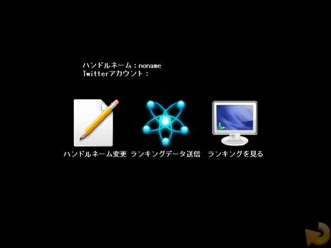

■３．７ ランキング
| |

| １．ネットランキングについて |
| |
今作では、ステージ毎のクリアタイムを他のプレイヤーと競うネットランキングシステムを搭載しています。
ネットランキングを行う時はインターネット接続が必須となります。
|
| ２．ハンドルネーム変更 |
| |
ネットランキングで使用するハンドルネームを変更します。ハンドルネームは半角英数とアンダーバー「_」のみとなります。
また、今作からはハンドルネームにTwitterアカウント情報を付与することができます。
ツイッターアカウントを持っていない、または表示させたくない方は、アカウント名を入力する画面で空白のままエンターを押してください。
|
| ３．ランキングデータ送信 |
| |
自分のゲームデータをネットランキングに送信します。
まだクリアしていないステージは送信されません。
|
|
|